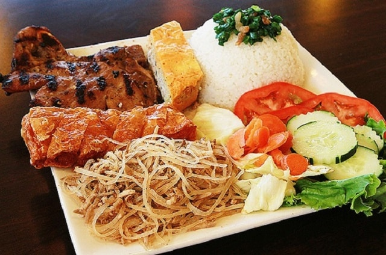
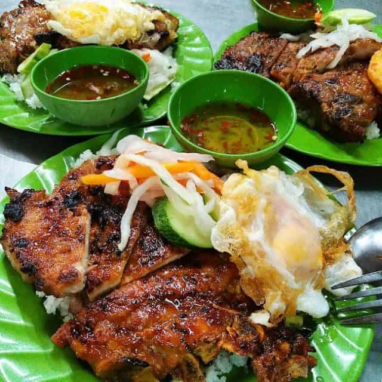
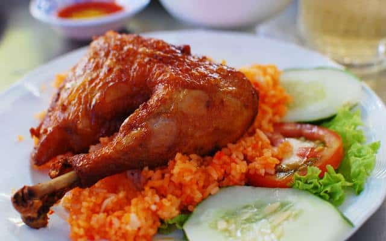
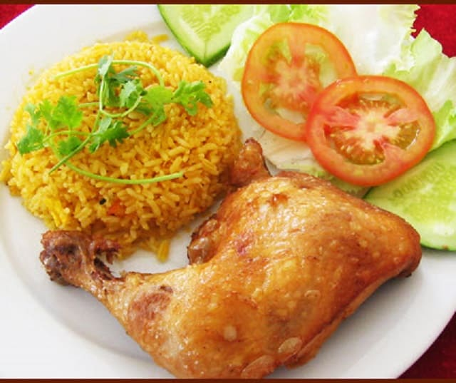
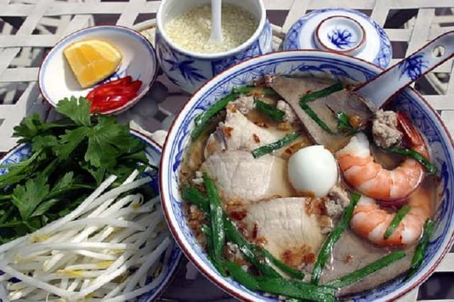
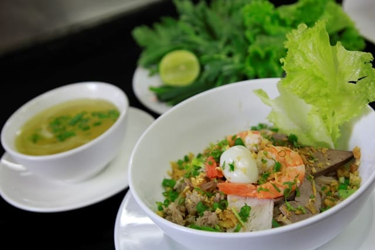
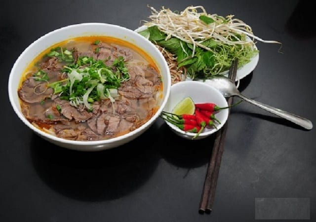
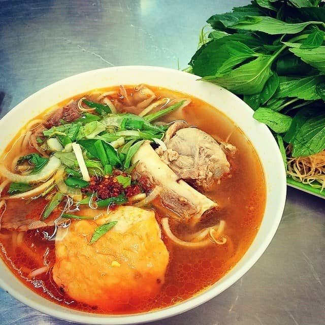

1. Cơm Tấm
Cơm Tấm là một trong những món ngon của Sài Gòn, là một phần không thể tách rời của Sài Gòn. Tại sao lại nói như vậy, bởi vì những người sinh sống nơi đây có thể ăn món này cả ngày từ bữa sáng đến bữa tối không thấy chán. Thậm chí cơm tấm còn là sự lựa chọn hoàn hảo cho những bữa ăn khuya, nhất là những người phải đi làm đêm.

Một đĩa cơm tấm đầy đủ có nhiều thứ lắm. Bạn sẽ thấy “choáng ngợp” khi trước mắt mình là một đĩa cơm tấm có vô số thứ. Đầu tiên là phải có cơm tấm rồi, kế đến là thịt sườn nướng vàng óng một lớp mỡ, thơm ngon trông thật là hấp dẫn, chả trứng, trứng ốp la, lạp xưởng và chút đồ chua. Để phần cơm trở nên hấp dẫn, người ta sẽ chan thêm một chút mỡ hành hay tóp mỡ để cho món cơm Tấm trở nên thật hấp dẫn.

Không chỉ đầy đặn và ngon mắt thôi đâu, cơm Tấm còn mang một hương vị đặc biệt mà du khách khi đã tới đây ăn rồi thì sẽ không bao giờ quên. Với cơm Tấm, mọi sự sáng tạo nằm gọn trong chén nước mắm dùng kèm. Nước mắm ngọt thấm vào từng hạt cơm hòa quyện với sự béo ngậy của mỡ hành mang tới một hương vị mà khó ai có thể cưỡng lại được. Đặc biệt là phần thịt nướng được tẩm ướp kĩ lưỡng nướng trên than hồng càng quyến rũ du khách khi tới đây ăn. Để một góc độ nào đó thấy được sự tỉ mỉ và khó tính của những người sành ăn.

Giá một phần cơm Tấm trung bình chỉ từ 25.000 – 40.000 đồng là đủ cho một bữa ăn chất lượng cho một người. Ở Sài Gòn có rất nhiều địa chỉ cơm Tấm nhưng mách cho bạn một địa chỉ, bạn ghé qua số 113 Nguyễn Phi Khanh, quận 1. Có thể tới đây ăn thử vì ở đây lúc nào cũng đông khách và tới cả những người khó tính nhất cũng khen là ngon. Còn ngần ngại gì khi đặt chân tới đây mà bạn không tới thưởng thức luôn cơm Tấm Sài Gòn thơm ngon, béo ngậy này.
2. Cơm gà xối mỡ
Cơm gà xối mỡ cũng là món ăn ngon được nhiều du khách khi tới đây đều muốn thưởng thức. Bạn sẽ rất bất ngờ bởi nó chẳng giống với bất kỳ món gà nào mà ta từng ăn. Món Cơm gà xối mỡ vẫn có một sự đặc trưng riêng của hương vị, sự mềm và chín đều, không bị sống trong, cũng không quá chín hay bị khô. Lớp da giòn vừa đủ kết hợp với thịt mềm bên trong, ăn thêm với chút cơm và rau xà lách hay dưa chuột và chấm với xì dầu. Chắc chắn du khách tới đây sẽ phải thốt lên rằng “đây là món ăn thực sự ngon” và chẳng kém gì cơm Tấm Sài Gòn.

Lớp da gà ở đây giòn tan, hương vị đậm đà, thịt gà mềm mà không bị bở, thấm đều gia vị. Tuy nhiên bí quyết để có lớp da gà giòn tan và vị mặn vừa ăn thì không phải dễ. Nhiều người hay gọi kèm theo một chén canh rong biển nấu với cật heo, chả cá viên và thịt heo bằm có hương thơm và vị rất quyến rũ. Giá một phần cơm gà xối mỡ từ 45.000 – 60.000 đồng/suất

Có rất nhiều địa chỉ ăn cơm gà xối mỡ ngon nhưng bạn nên thử ghé qua Cơm gà xối mỡ Lão Hương Thân ở 402 Trần Phú, phường 7, quận 5. Một điều đặc biệt là khi tới đây ăn hãy nhớ gọi kèm theo món canh rong biển nhé, như thế bạn sẽ cảm nhận được vị khác biệt của cơm gà xối mỡ khác với nhiều loại cơm gà khác và chắc chắn sẽ không bao giờ quên. Vậy nên, bạn hãy dẫn bạn bè và người thân cùng tới đây ăn nhé.
3. Món bánh Canh Trảng Bàng
Bánh canh Trảng Bàng cũng là món ăn không thể thiếu của người dân Sài Gòn. Bánh canh có nguồn gốc từ Tây Ninh nhưng giờ đây nó trở thành món ăn không thể thiếu của người dân Sài Gòn. Dễ dàng đi vào trong danh sách ẩm thực phong phú của Sài Gòn và thu hút được nhiều du khách khi đến đây đều muốn thưởng thức.

Thoạt nhìn qua thành phần khá đơn giản, chỉ bao gồm thịt nạc và móng giò. Tuy nhiên sự tinh tế, hấp dẫn ẩn chứa bên trong các nguyên liệu mà khi nếm thử người ăn mới có thể cảm nhận được hết sự tinh túy của bánh canh. Những miếng thịt luộc để dùng với tô bánh canh thường là thịt đùi heo, được luộc chín mềm nhưng không bị rã rục. Những sợi bánh canh trắng ngần được làm từ gạo nàng thơm sau ép thành những cọng bánh canh dẻo, dai, trắng muốt.

Điểm nhấn để tạo nên sức hút của món bánh canh chính là nước dùng. Nước dùng thường được nấu từ xương. Xương phải ninh thật lâu nước mới có vị ngọt. Phần nêm nếm vô cùng quan trọng, bởi đây chính là “linh hồn” của bát canh. Sợi bánh dù có ngon đến mấy mà nước dùng không đậm đà thì cũng xem như đã thất bại.

Có nhiều người đã tới đây ăn phải gật đầu nhận xét rằng “Ăn tô bánh canh này không khác gì dùng bữa cơm hàng ngày cùng với gạo, thịt, gia vị, nước chấm, rau thơm…nhưng ăn tô bánh canh thấy thú vị hơn nhiều hơn là dùng bữa cơm”. Nếu có dịp du khách có thể ghé qua địa chỉ bánh Canh Trảng Bàng tại số 180-182 Lý Thái Tổ, phường 1, Quận 3 hay số 70-72 Võ Văn Tần, phường 5 Quận 3 để thưởng thức nhé. Chỉ với 30.000 – 60.000 đồng/bát, ta có cảm nhận được vị ngọt của nước dùng, vị thơm, dai, mềm của sợi bánh, vị chua của chanh, vị cay của ớt cộng thêm vị mằn mặn của nước mắm sẽ khiến cho thực khách xuýt xoa, ăn một lần và nhớ mãi.
4. Hủ tiếu Nam Vang
Hủ tiếu vốn là món ăn của người Tàu phiêu bạt mang theo vào vùng đồng bằng sông Cửu Long. Ở Sài Gòn có rất nhiều quán hủ tiếu nhưng món này dần trở thành khẩu vị chính của người dân Nam Bộ.

Người Sài Gòn đã nấu hủ tiếu bằng nước xương ống của heo cùng với một ít mực khô, tôm he khô để lại một thứ nước trong vắt màu vàng nhạt, ngọt lịm. Bạn có thể dễ dàng thấy, trải lên sợi bánh là thịt nạc, gan tim, tôm tươi vừa luộc chín có vị ngọt tự nhiên.

Hủ tiếu Nam vang có mùi vị độc đáo là do nêm vào một vài muỗng tỏi giã nhuyễn ngâm dấm thanh. Tô hủ tiếu múc ra bát lấn chìm dưới làn nước trong veo là sợi bánh trắng phau, tô điểm những lát thịt, tim gan cùng với màu hồng tươi của con tôm ẩn mình dưới vài cọng hành xanh ngắt. Rưới thêm vài muỗng tỏi ngâm cộng thêm vài lát ớt chín vàng hòa cùng với lá hẹ tạo nên tổng thể màu sắc
Hủ tiếu thật đã trở thành khẩu vị của một thành phố đông đúc và sầm uất bậc nhất đã góp phần làm phong phú thêm ẩm thực Sài Thành. Có rất nhiều quán hủ tiếu ở Sài Gòn, chỉ từ 45.000 đồng – 60.000 đồng/bát. Bạn có thể ghé qua quán hủ tiếu Nam Vang số 389 – 391 Võ Văn Tần, Quận 3 hoặc ghé qua Hủ tiếu Liến Húa nằm ở 312 An Dương Vương để thưởng thức nhé.
5. Bún bò Huế
Bún bò Huế là món ăn quen thuộc ở nhiều tỉnh thành. Nếu ở Huế người ta chỉ gọi là “bún bò giò heo” thì ở nơi khác cũng có cái tên khác là “bún bò Huế”. Ở Sài Gòn, bún bò Huế cũng đa dạng như người dân tìm đến thành phố này.

Thời tiết mát mẻ, thưởng thức một tô bún bò Huế nóng hổi, nước dùng trong, óng sắc vàng dậy mùi sả ớt cùng những lát thịt bò gân thái mỏng, giò heo ninh mềm thì thật “tuyệt vời ông mặt trời “ hòa quyện với vị đậm đậm cay cay của vị ớt sa tế. Ở Sài Thành không khó để bạn tìm được một quán bún bò nhưng để “lần cho ra” những tô bún bò “chất lừ” thì bạn có thể tham khảo một số địa chỉ như bún bò Huế Thành Nội địa chỉ 47A Trần Cao Vân, Quận 3 hay bún bò Huế khu Mỹ Phúc, đường Nguyễn Đức Cảnh, Quận 7, số 295 Lê Hồng Phong, phường 2, quận 5 Ngoài những quán nêu trên, Sài Gòn không thể thiếu những quán bún bò nhỏ nằm khuất đâu đó, chỉ với 45.000 đồng – 65.000 đồng/tô bạn có thể hài lòng thưởng thức một tô bún bò Huế thơm lừng ngay trên đất Sài Thành.
